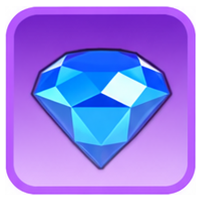
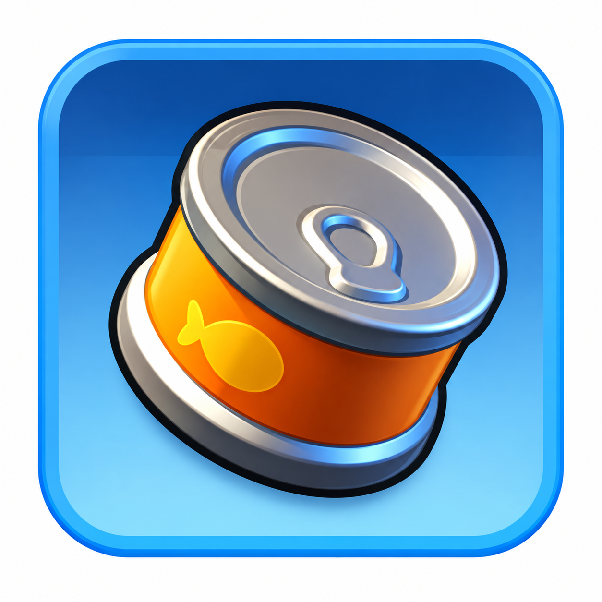
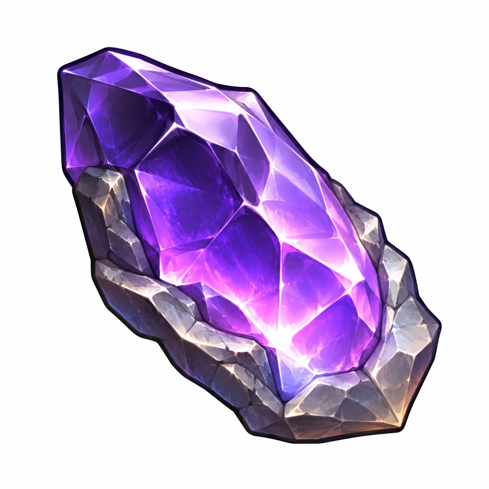

Мобилизация альянса
Автор - Sova
«Мобилизация альянса» — многодневное событие, в котором участники выбирают задания, выполняют их и получают очки.
Ваши очки одновременно идут:
- в личный прогресс;
- в общий результат альянса.
Выбирать выгодные задания, а не брать всё подряд.
Количество принятий заданий ограничено, поэтому каждая попытка имеет значение.
КРАТКО И ПО ДЕЛУ
Ваши очки идут сразу в личный прогресс и в общий результат альянса. Главное — не брать всё подряд, а выбирать задания с хорошей отдачей.
📌 Основа события
Условия участия
- Топка 10 уровня или выше.
- В альянсе минимум 15 участников.
Если условия не выполнены, принять участие нельзя.
Когда проходит
Это многодневное событие. Для 58 государства точные даты всегда смотрим:
- в календаре событий;
- на таймере самого события.
На старые календари из интернета не опираемся.
Как работает
- Выбираем задание.
- Проверяем условие и таймер.
- Принимаем.
- Выполняем.
- Получаем очки.
- Берём следующее.
Важно
Не нажимайте «Принять», пока не уверены, что задание выполнимо.
Не берём миссию «на пробу». Сначала проверяем таймер, материалы, энергию и свои возможности.
Попытки заданий

После них дополнительные попытки можно покупать за алмазы.Точную стоимость на сайте не фиксируем — она может меняться.
Общие и эксклюзивные задания
Задания отличаются:
- условиями;
- временем выполнения;
- количеством очков;
- стоимостью по ресурсам.
Эксклюзивные задания обычно выгоднее, но брать их всё равно нужно с головой.
✅ Какие задания обычно выгоднее брать
Охота и Полярный террор
Часто это одни из самых удобных заданий, если вы всё равно собирались тратить энергию.

Энергия губернатора расходуется не зря — вы одновременно делаете событие и получаете обычные награды.Сбор ресурсов
Хороший вариант, если войска свободны и есть время дождаться возврата.
Особенно полезно брать такие задания заранее, а не в последний момент.
Обучение войск
Хорошее задание, если:
- обучение и так планировалось;
- есть ускорения;
- трата полезна аккаунту.
Строительство и исследования
Берём только тогда, когда прокачка реально нужна, ресурсы есть, а ускорения и так планировались.
Не запускаем дорогое улучшение только ради одной миссии.
Совмещение — лучший выбор
Самые сильные задания — те, которые одновременно дают:
- очки Мобилизации;
- очки другого события;
- реальную полезную прокачку.
Главный критерий
Лучшее задание — не самое дорогое, а то, которое даёт много очков за минимум ценных ресурсов.
⚠️ Чего лучше избегать
💡 Стратегия: как играть выгоднее
Для F2P
- недорогие Эксклюзивные задания;
- обучение войск;
- охота;
- Полярный террор;
- сбор;
- плановое строительство и исследования;
- совмещение с другими событиями.
Для сильных игроков
Даже если ресурсов много, это не значит, что надо брать самое дорогое задание.
Оптимум — высокий результат, полезная прокачка и минимум лишних трат.
Дополнительные попытки
Перед покупкой за алмазы спросите себя:
- какое задание я возьму;
- сколько оно даст очков;
- успею ли выполнить;
- нужны ли эти очки альянсу;
- получу ли за них полезную личную награду.
Не оставляйте всё на конец
- может не быть подходящего задания;
- может не хватить времени;
- войска и сборщики могут не успеть;
- нужную цель могут долго искать.
Поэтому 9 базовых попыток лучше распределять по всему событию.
👥 Альянс, лиги и роли игроков
Личные и общие очки
Личные очки идут в:
- личные награды;
- личный рейтинг;
- оценку вклада.
Общие очки складываются в результат альянса. Часто много стабильных участников полезнее, чем несколько игроков с огромными разовыми тратами.
Лиги
- Новичок
- Младшая
- Старшая
- Элита
- Легендарная
Чем выше лига, тем выше потенциальная ценность результата.
Повышение и понижение
Положение альянса в группе влияет на переход между лигами. Перед финальной борьбой всегда проверяем актуальную таблицу и не тратим огромные запасы без понятной цели.
Памятники альянса
Событие связано с Памятниками альянса, поэтому высокий результат полезен не только личными наградами, но и развитием альянса.
Минимум для участников
R4/R5 могут ставить внутреннюю цель, но она должна быть реалистичной. Плохой вариант — требовать огромные очки любой ценой.
Что делать R4/R5
- объяснить правила;
- поставить разумную цель;
- следить за общим результатом;
- координировать работу общей доски;
- напоминать про неиспользованные попытки;
- не заставлять игроков сливать стратегические запасы, особенно перед SvS.
Что делать игроку
- проверять задание и таймер до принятия;
- выбирать очки с минимальной стоимостью;
- разумно использовать Эксклюзивные задания;
- совмещать с другими событиями;
- не тратить редкие материалы без нужды;
- не брать хорошее задание, если сейчас не можете его выполнять.
🚫 Частые ошибки и короткий итог
Частые ошибки
- брать первое попавшееся задание;
- принимать миссию, не прочитав условие;
- считать высокий множитель автоматически выгодным;

сливать Огненные кристаллы и Мифрил;- покупать ненужные вещи ради задания;
- не совмещать события;
- оставлять всё на последний день.
Главное
- Топка 10+ и альянс от 15 игроков.
- Есть 9 базовых принятий.
- Дополнительные попытки — за алмазы.
- Перед принятием всегда проверяем условие и таймер.
- Эксклюзивные задания часто выгоднее.
- Редкие материалы бережём под сильное совмещение.
- Лучшее задание — то, которое даёт много очков за минимум ценных ресурсов.